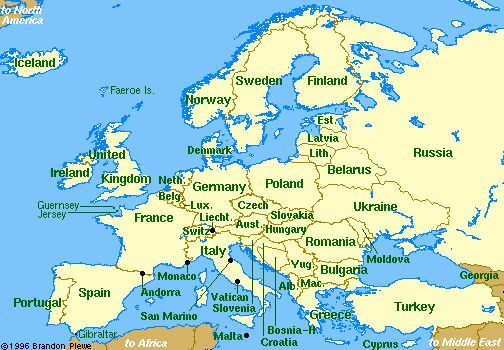

Indigenous signs for countries in Eastern Europe


 David Bar-Tzur
David Bar-Tzur


- Eastern Europe
- Right hand [B], PO > NDS, FO up, sweeps > right twice + [E], PO away, FO up, is held in place momentarily then [5], PO away, FO away, moves in a circle.

Flags: World flag database.
Map: Virtual Tourist.
For a quick, interesting resource for facts about this and other countries,
try Mystic Planet - The New Age directory of Planet Earth.
Explanation of glossing system used
(to understand how I describe the signs in this dictionary)
- Albania (Shqipëria)
- (1) [A], PO > head, circles temple. For a QuickTime movie of this sign, see Croatian Sign Language dictionary. Click on "Albania". (2) (2h)[5] cross hands at wrist and interlock thumbs. For a movie of this signs, see Albania ألبانيا.
- Azerbaijan (Azərbaycan)
- (1) (2h)[1], POs ><, FOs up, FTs make a large circle around the ears and return to place.6 (2) [1^], PO down, FO up, brushes across forehead from NDS to DS, continues down from temple to cheek, and then moves through the air > DS. To see a film of this sign, go to Laat het gebaar zien: Azerbeidzjan.
- Bosnia and Herzegovina (Bosna i Hercegovina)
- [5], PO > NDS, FO up, places thumb against chin and FT wg.3
- Bulgaria (
 )
) - (1) [bC] touches tip of nose with thumb while rotating so that final PO > NDS, FO away from signer.1 (2) [C] touches tip of nose with thumb, moving away from signer while moving upwards and closing to an [S].3(3) [Bb^] is held in front of nose and moves away from signer.2 (4) [Bb] becomes [A] while doing moustache. For a QuickTime movie of this sign, see ASL browser - Bulgaria.
- Croatia (Hrvatska)
- [4], PO > signer, FO up, rubs down heart, then FO > NDS and rubs across heart. For a QuickTime movie of this sign, see Croatian Sign Language dictionary. Click on "Croatia". You may need to click on this several times and if you get a bar without a picture, click on the play arrow.
- Cyprus (Κύπρος)
- (2h)[L], POs away, FOs up, touch FTs and DH moves away. Then NDH changes to a [B] and the DH repeats what it did before. For a movie of this sign, see Cyprus - قبرص.
- Czech Republic (Česká Republika)
- [B], PO > signer, FO > NDS, brushes past chin as it moves > DS + thumb and index finger close repeatedly as they then move > DS. For a video of this sign, go to spreadthesign | The sign language dictionary for the world - 100% Free. Type "Czech Republic" in the black box that says "type your search word here", and click on the Czech flag (blue triangle and white and red stripes).
- Estonia (Eesti)
- [A dot], PO > signer, FO > NDS, touches chin and descends. To see a video of this sign, go to Lat het gebaren zein: Estland.
- Georgia (Sak'art'velo)
- (2h)[5], PO > chest, FOs down, decend in front of chest. To see a video of this sign, go to Lat het gebaren zein: Georgië.
- Greece (Ελλάς)
- (2h)[1], POs down, NDH FO away, DH PO > NDS, DH taps twice on top of NDH. For for a static gif of this sign, see Surdimobil - Dictionnaire des signes. Click on "G", then "Grèce". It will look like nothing has happened, but scroll down to see the illustration.
- Herzegovina (Hercegovina)
- [5], PO > signer, FO up, pivots down at elbow until it has FO > NDS. For a QuickTime movie of this sign, see Croatian Sign Language dictionary. Click on "Hercegovina". Although this is a Croatian site, the signs for other countries seem to be indigenous. You may need to click on this several times and if you get a bar without a picture, click on the play arrow.
- Hungary (Magyarország)
- [bO] pulls at moustache while moving down. To see a movie of this sign, go to Hallatlan - Földrajz: MAGYAR.
- Latvia (Latvija)
- [L], PO diagonally away, FO up, hand bends once at wrist until FO points away.4
- Lithuania (Lietuva)
- [H] is held loosely and is drawn across the forehead > DS. To see a video of this, go to spreadthesign | The sign language dictionary for the world - 100% Free. Type "Lithuania" in the black box that says "type your search word here", and click on the Lithuanian flag (yellow, green, and red stripes).
- Macedonia (Makedonija)
- [W] rubs FTs against cheek. For a QuickTime movie of this sign, see Croatian Sign Language dictionary. Click on "Macedonia". Although this is a Croatian site, the signs for other countries seem to be indigenous. You may need to click on this several times and if you get a bar without a picture, click on the play arrow.
- Malta (Malta)
- [1] draws cross on forehead. (< Cross on upper lefthand corner of the Maltese flag.)
- Montenegro (Crna Gora)
- Index finger of [V:], PO > head, FO up, is held against NDS temple and the hand is twisted at the wrist while the the index finger maintains contact.3
- Poland (Polska)
- (1) [A dot], touches tip of thumb to NDS just below shoulder, then DS.1 (2) [O^], touches FTs to NDS just below shoulder, then DS.2 (3) [B^], touches FTs to NDS just below shoulder, then DS. For a QuickTime movie of this sign, see NEEDS Outreach: Poland. [All the above < the Poles' bravery in facing Russians and any other would-be invaders by ripping their shirts off, fighting to the last breath, fighting bare-handed, if necessary, against better equipped armies. (The origin of the American sign is the statue of the Pole best-known to Americans, General Kosciuszko, who was a strategist and tactician advising General Washington during the American Revolution, which depicts him as having a turned-up nose. As is often the case, the sign for an individual became the sign for the place that person is from.)]
- Romania (România)
- (1) (2h)[5], FOs up, touch FTs then separate while closing to [O^].1 (2)
[bC], PO towards, runs FT from NDS shoulder to DS waist. For a QuickTime movie of this sign, see ASL browser - Romania.
- Russian Federation (Российской Федерации)
- (1) (2h)[S] are held with fists touching elbows. Arms are held high while elbows and fists rock up and down.1
(2) [1^], PO > NDS, FO up, brushes at chin > NDS twice.1 [< Russian sign for red (like the lips).]3 For a QuickTime movie of this sign, see Woordenboek Nederlands - Vlaamse Gebarentaal: Rusland (second image). (3) [1^] is drawn across the lips once and then swing finger out so that PO is still down, but FO is away. For a QuickTime movie of this sign, see NEEDS Outreach: Russia. [< the sign for Peter the Great, which in turn is from moustache and NUMBER-ONE.]
- Serbia (Srbija)
- [G], PO > NDS, FO up, sweeps across forehead. For a movie of this sign, see Serbia - صربيا.
- Slovakia (Slovensko)
- (2h)[X], POs ><, FOs away, are held in neutral space and then move back twice so that FOs are up and by the ears. For a QuickTime movie of this sign, see NEEDS Outreach: Slovakia.
- Slovenia (Slovenija)
- (1) [H], PO > signer, FO up, moves from DS to center of chest and back.3 (2) [H], PO > back, FO up, circles CCW. For a QuickTime movie of this sign, see Croatian Sign Language dictionary. Click on "Slovenija". Although this is a Croatian site, the signs for other countries seem to be indigenous. You may need to click on this several times and if you get a bar without a picture, click on the play arrow.
- Ukraine (Ukrayina)
- [bX] twists at corner of mouth and descends in a reveresed "S". For an animation of this sign, see http://www.migamy.za.pl/Ukraina.swf.
- Yugoslavia (Jugoslavija)
- [B^], PO up, runs down touchs NDS shoulder blade, then DS waist. For a QuickTime movie of this sign, see Woordenboek Nederlands - Vlaamse Gebarentaal: Joegoslavië. The Union of Serbia and Montenegro was formed on February 4, 2003 and officially abolished the name "Yugoslavia." On June 3 and June 5, 2006, Montenegro and Serbia respectively declared their independence, thereby ending the last remnants of the former Yugoslav federation.
List of sources cited
 1. Signs around the world: Countries [Videotape]. Burtonsville, MD: Sign Media.
1. Signs around the world: Countries [Videotape]. Burtonsville, MD: Sign Media.
2. Sandager, O. K. (1986). Sign languages around the world North Hollywood, California: OK Publ.
3. http://www.crodeafweb.net/rjecnik/indexeng.html - Croatian Sign Language dictionary. This web site seems to be no longer extant (1/26/02).
4. Latviesu Zimju Valodas Vardnica (Latvian Sign Language dictionary).
5.
6. INTERPRETING TIDBITS: Terrorism. Gate Communications.

Home